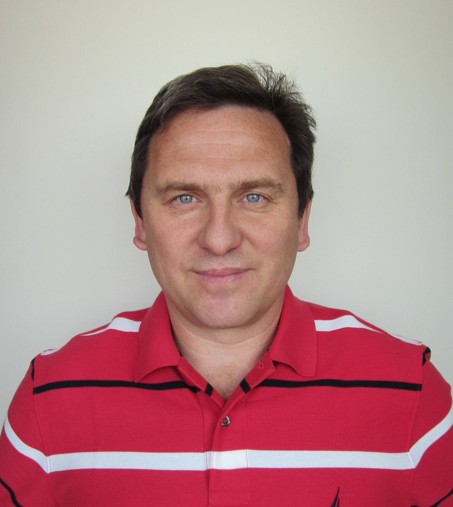

Administration and Staff
Paras N. Prasad, Ph.D.
Executive Director
428 Natural Science Complex
University at Buffalo
Buffalo, NY 14260-3000
(716) 645-4147
FAX: (716) 645-6945
pnprasad@buffalo.edu

Indrajit Roy, Ph.D.
Deputy Director, Biophotonics Division
458 Natural Science Complex
University at Buffalo
Buffalo, NY 14260-3000
(716) 645-4163
FAX: (716) 645-6945
iroy@buffalo.edu

Tymish Y. Ohulchanskyy, Ph.D.
Deputy Director, Photomedicine
458 Natural Science Complex
University at Buffalo
Buffalo, NY 14260-3000
(716) 645-4164
FAX: (716) 645-6945
tyo2@buffalo.edu

Timothy M. Cryan
Executive Officer
455 Natural Science Complex
University at Buffalo
Buffalo, NY 14260-3000
(716) 645-4159
FAX: (716) 645-6945
tmcryan@buffalo.edu
Marjorie Weber
Executive Assistant to Dr. Prasad
427 Natural Science Complex
University at Buffalo
Buffalo, NY 14260-3000
(716) 645-4147
FAX: (716) 645-6945
mdweber@buffalo.edu
Location
ILPB is located in the Natural Sciences Complex, North Campus - University at Buffalo